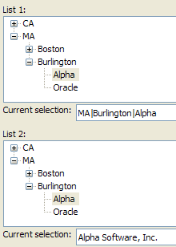

Using the {Data} Command
Description
The {Data} command allows you to return a value other than the display value from a node in a tree control. The following picture shows 2 versions of the same tree control. The control at top returns only the values of the nodes of the selected branch of the tree. The control at bottom returns data values.

Example
The script defines the 2 versions of the tree control lists. The first list has no {Data} commands.
|
list1 = <<%txt% CA|Los Angeles|Studio 1 CA|Los Angeles|Studio 2 CA|San Francisco|Apple MA|Boston|Fidelity MA|Burlington|Alpha MA|Burlington|Oracle %txt% |
The script defines the 2 versions of the tree control lists. The second list uses {Data} commands in some, but not all tree nodes.
|
list2 = <<%txt% {Data=CA}CA|{Data=LA}Los Angeles|{Data=company name is 'Studio 1'}Studio 1 {Data=CA}CA|{Data=LA}Los Angeles|Studio 2 {Data=CA}CA|San Francisco|Apple {Data=MA}MA|{Data=Boston}Boston|Fidelity {Data=MA}MA|{Data=Burlington}Burlington|{Data=Alpha Software, Inc.}Alpha {Data=MA}MA|{Data=Burlington}Burlington|Oracle %txt% |
The remainder of the script uses standard Xdialog coding.
Limitations
Desktop applications only.
See Also
Tree Control X Directive, Tree Control D Directive, {DATA}
Next